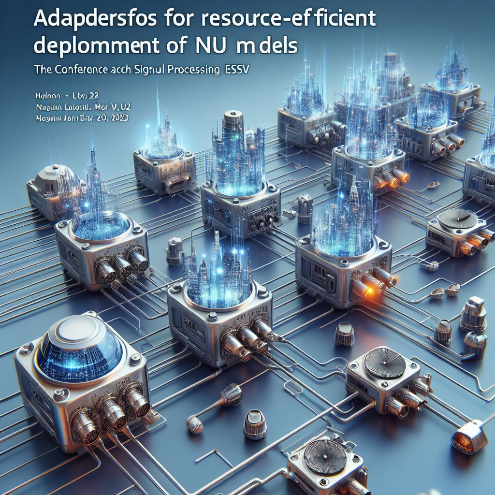

Publications

Adapters for resource-efficient deployment of NLU models
The Conference on Electronic Speech Signal Processing (ESSV) · Mar 3, 2023
This paper discusses the challenges of deploying large Transformer-based language models like BERT due to their size and cost. It suggests using smaller, less powerful models as an alternative to keep deployment costs down, despite a potential decrease in accuracy. The paper also explores the use of the Adapter framework, which allows many task-specific Adapters to share one large transformer model. This approach significantly reduces memory requirements, with the proposed BERT+Adapter architecture needing only 1 GB of memory for deploying 100 NLU models, compared to 41.78 GB for a BERT-only architecture. The comparison focuses on memory footprint, quality of Intent Detection, and processing speed.
Go to Publication
Module Selection: A new task for dialog systems
The 13th International Workshop on Spoken Dialogue Systems Technology · Feb 13, 2023
This paper discusses the concept of a Modular Dialog System Framework, which integrates various conversational agents to form a comprehensive dialog system. The framework treats these agents as black boxes and can work with any dialog system without requiring any adaptations. It’s also compatible with commercial platforms like Google Dialogflow or IBM Watson Assistant.
A new task, called Module Selection, is proposed in the paper. This task involves choosing the appropriate conversational agent for a given user utterance. The paper also introduces an evaluation methodology specifically for Modular Dialog Systems.
The authors have created a dataset using three commercial frameworks - Google Dialogflow, Rasa, and IBM Watson Assistant. They propose three models that can serve as a strong baseline for future research in Module Selection. The paper also compares the performance of a Modular Dialog System with a single, monolithic system.
Go to Publication

Combining open domain question answering with a task-oriented dialog system
Association for Computational Linguistics (ACL) · Aug 5, 2021
The study proposes a dialog system that combines open-domain question answering with a task-oriented dialog system. This hybrid system can answer questions from Wikipedia while also functioning as a personal assistant. The aim is to take advantage of the strengths of an open-domain question-answering system and the conversational abilities of task-oriented dialog systems. The technical details of the system are explained, and a new dataset is created for evaluation purposes. An evaluation method is also introduced for this system. A comparison of the non-modular and modular systems shows that the modular dialog system framework is highly effective at integrating conversational agents, with only a slight decrease in each agent's performance in the modular setting.
Go to Publication
Normalization methods for intent detection modular dialogue systems
The Conference on Electronic Speech Signal Processing (ESSV) · Mar 4, 2021
This work explores how intent recognition from multiple independent modules can be consolidated into a single meta chatbot. It compares the quality of Natural Language Understanding in modular chatbots of varying sizes (based on the number of intents) and evaluates different normalization methods. The study finds that distributing the scenario across multiple chatbots introduces additional errors, and F1 scores decrease as the number of modules increases. The F1 scores also drop more significantly when there is a pronounced size difference between a large and a small module. The research also reveals that the models’ confidence levels for intent detection provide a strong baseline for module selection, and only minor improvements can be achieved through different normalizations.
Go to Publication
Adapters for resource-efficient deployment of NLU models
The Conference on Electronic Speech Signal Processing (ESSV) · Mar 3, 2023
This paper discusses the challenges of deploying large Transformer-based language models like BERT due to their size and cost. It suggests using smaller, less powerful models as an alternative to keep deployment costs down, despite a potential decrease in accuracy. The paper also explores the use of the Adapter framework, which allows many task-specific Adapters to share one large transformer model. This approach significantly reduces memory requirements, with the proposed BERT+Adapter architecture needing only 1 GB of memory for deploying 100 NLU models, compared to 41.78 GB for a BERT-only architecture. The comparison focuses on memory footprint, quality of Intent Detection, and processing speed.
Go to PublicationModule Selection: A new task for dialog systems
The 13th International Workshop on Spoken Dialogue Systems Technology · Feb 13, 2023
This paper discusses the concept of a Modular Dialog System Framework, which integrates various conversational agents to form a comprehensive dialog system. The framework treats these agents as black boxes and can work with any dialog system without requiring any adaptations. It’s also compatible with commercial platforms like Google Dialogflow or IBM Watson Assistant. A new task, called Module Selection, is proposed in the paper. This task involves choosing the appropriate conversational agent for a given user utterance. The paper also introduces an evaluation methodology specifically for Modular Dialog Systems. The authors have created a dataset using three commercial frameworks - Google Dialogflow, Rasa, and IBM Watson Assistant. They propose three models that can serve as a strong baseline for future research in Module Selection. The paper also compares the performance of a Modular Dialog System with a single, monolithic system.
Go to Publication
Combining open domain question answering with a task-oriented dialog system
Association for Computational Linguistics (ACL) · Aug 5, 2021
The study proposes a dialog system that combines open-domain question answering with a task-oriented dialog system. This hybrid system can answer questions from Wikipedia while also functioning as a personal assistant. The aim is to take advantage of the strengths of an open-domain question-answering system and the conversational abilities of task-oriented dialog systems. The technical details of the system are explained, and a new dataset is created for evaluation purposes. An evaluation method is also introduced for this system. A comparison of the non-modular and modular systems shows that the modular dialog system framework is highly effective at integrating conversational agents, with only a slight decrease in each agent's performance in the modular setting.
Go to PublicationNormalization methods for intent detection modular dialogue systems
The Conference on Electronic Speech Signal Processing (ESSV) · Mar 4, 2021
This work explores how intent recognition from multiple independent modules can be consolidated into a single meta chatbot. It compares the quality of Natural Language Understanding in modular chatbots of varying sizes (based on the number of intents) and evaluates different normalization methods. The study finds that distributing the scenario across multiple chatbots introduces additional errors, and F1 scores decrease as the number of modules increases. The F1 scores also drop more significantly when there is a pronounced size difference between a large and a small module. The research also reveals that the models’ confidence levels for intent detection provide a strong baseline for module selection, and only minor improvements can be achieved through different normalizations.
Go to Publication